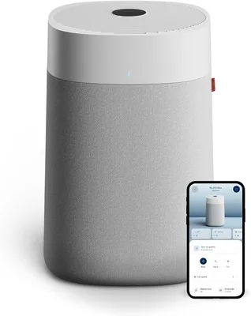
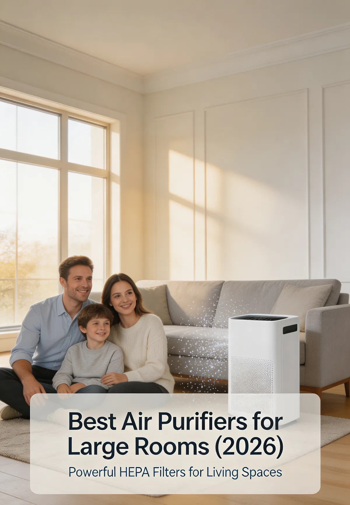

A detailed review covering performance, HepaSilent technology, noise levels, room coverage, filter costs, and whether the Blueair 211+ is worth buying.


Try our Air Purifier Finder — get a personalized match in 60 seconds.
The best large room air purifier with HepaSilent technology. Covers up to 540 sq ft with ultra-quiet 25dB operation and Energy Star efficiency.
The Blueair Blue Pure 211+ is a premium large-room air purifier that combines cutting-edge HepaSilent technology with exceptional coverage for spaces up to 540 square feet.
With a powerful 500 cfm CADR rating and ultra-quiet 25 dB operation, it delivers industry-leading performance for living rooms, open-plan spaces, and bedrooms — all certified by Energy Star for energy efficiency.
Ratings reflect our weighted research model based on manufacturer specifications, AHAM certification data, and verified customer feedback. See our research methodology.
Check Latest Price on Amazon →Here's how the Blueair 211+ stacks up against key performance benchmarks.
| Specification | Blueair Blue Pure 211+ | Category Average |
|---|---|---|
| CADR Rating | 500 cfm | 200-400 cfm |
| Noise Level | 25 dB | 25-35 dB |
| Room Size Coverage | 540 sq ft | 200-400 sq ft |
| Filtration | HepaSilent Technology | True HEPA |
| Smart Features | One-Button Operation | Variable |
| Price | $249.99 | $100-$200 |
The Blueair Blue Pure 211+ is engineered for superior performance in large rooms, delivering powerful air cleaning with its patented HepaSilent technology.
At the heart of the 211+ is Blueair's HepaSilent technology, which combines a high-performance HEPA filter with a silent fan system to capture particles as small as 0.3 microns. This means it effectively removes dust, pollen, pet dander, and airborne allergens from your space.
The washable pre-filter captures larger particles like hair and lint before they reach the main HEPA filter, extending its lifespan and maintaining optimal airflow.
At just 25 dB, the Blueair 211+ operates at an ultra-quiet level that's barely noticeable — comparable to soft rustling leaves or distant traffic. This makes it ideal for nighttime use in bedrooms or for quiet work environments without any distracting fan noise.
With a CADR rating of 500 cfm, the 211+ is designed for rooms up to 540 square feet — nearly twice the coverage of many competing models. This makes it perfect for large living rooms, open-concept spaces, and even master bedrooms. For best results, position the purifier in a central location with unobstructed airflow.
The Blueair 211+ is designed for low-maintenance operation with its washable pre-filter and long-lasting HepaSilent filtration system.
The washable pre-filter is a convenient feature that saves money and reduces environmental waste. Simply rinse it under running water, let it air dry completely, and snap it back into place — no tools required.
With Energy Star certification, the Blueair 211+ consumes minimal electricity even during continuous operation. The washable pre-filter eliminates the need for frequent replacements, and the HEPA filter only needs annual replacement, making it a cost-effective choice over its lifespan.
The Blueair Blue Pure 211+ is an excellent choice for buyers who need powerful air purification for larger spaces without compromising on quiet operation.
The Blueair Blue Pure 211+ is a premium large-room air purifier that sets the bar high with its HepaSilent technology, ultra-quiet operation, and extensive 540 sq ft coverage.
With a powerful 500 cfm CADR rating, Energy Star certification, and a washable pre-filter, it addresses the most common air quality concerns for larger living spaces while keeping noise levels impressively low.
While the higher price point may be a consideration, the Blueair 211+ delivers exceptional value for those who need superior coverage and quiet performance in a single unit.
Check Latest Price on Amazon →HepaSilent is Blueair's patented filtration technology that combines a high-efficiency HEPA filter with an optimized airflow system to deliver powerful purification with minimal noise. It captures 99.97% of airborne particles while operating at whisper-quiet levels.
The washable pre-filter should be cleaned every 2 months, or more frequently if you have pets or live in a dusty area. Simply rinse it under running water, let it air dry completely, and reinstall it. A visual inspection will tell you when it needs cleaning.
Yes. The HepaSilent technology captures 99.97% of airborne particles including pollen, dust mites, pet dander, and other allergens. Its powerful 500 cfm CADR rating means it circulates and filters large volumes of air quickly, making it an excellent choice for allergy sufferers.
The Blueair 211+ is designed for rooms up to 540 square feet, which covers most living rooms and open-plan spaces. For areas larger than 540 sq ft, consider using multiple units or choosing a model with an even higher CADR rating.
Digital & Gear participates in affiliate programs. If you purchase through links on our website, we may earn a commission at no additional cost to you.
Our reviews are based on research, product features and customer feedback.
See how this model stacks up against our other top-rated picks for 2026.
See Full Comparison →Take our 60-second quiz to discover the best air purifier for your needs.
Start the Finder →